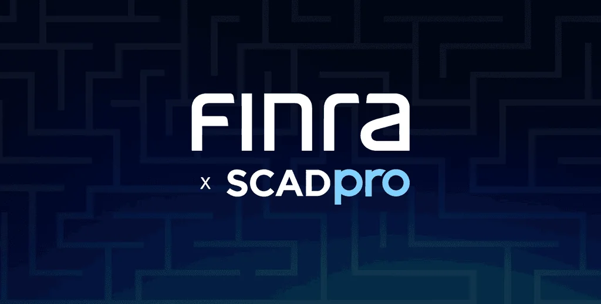

FINRA x SCADpro
Sponsored student team project · NDA summary
- When
- Jan–Mar 2026
- Team
- 22 people
- Role
- UX Designer
This project is under NDA, so this page shows no screens or confidential details.
It covers what I can share. I’m glad to walk through my role and process in an interview.
Overview
SCADpro is SCAD’s design studio, where student teams take on briefs from partner organizations. For FINRA, a 22-person multidisciplinary team spent January to March 2026 exploring a unified login and dashboard for FINRA’s logged-in systems.
The Brief
One way in, for very different people
FINRA’s logged-in systems serve broker-dealer staff, investors and other regulators, each with their own tasks and their own level of access, across more than one platform. The question was what a more unified experience could look like within real-world constraints: one login and dashboard, with clearer role-based flows, that helps each person find their way, finish their task, and see only what their role permits.
My Role
UX Designer on a 22-person team
My contribution
- Worked on research and early design concepts for clearer, role-based flows, so each kind of user could get into FINRA’s logged-in systems and move between them.
- Researched AI and chatbot use cases, and turned the findings into data-backed recommendations.
- Co-created the team’s process book and handoff documentation.
Process
Research first, then concepts
The work moved from research into early design exploration, and closed with handoff documentation for FINRA.
- Research, including AI and chatbot use cases.
- Recommendations grounded in that research.
- Design concepts for a unified, permission-based login and dashboard.
- A process book and handoff documentation.
Outcome
What FINRA received
FINRA received the team’s design concepts and research-backed recommendations, with a process book and handoff documentation.